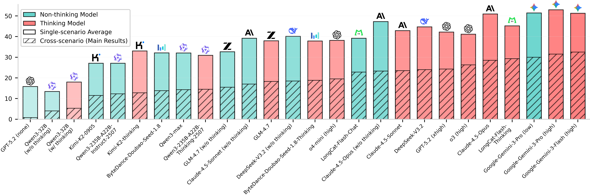

🌱VitaBench: Benchmarking LLM Agents
with Versatile Interactive Tasks in Real-world Applications
Abstract
As LLM-based agents are increasingly deployed in real-life scenarios, existing benchmarks fail to capture their inherent complexity of handling extensive information, leveraging diverse resources, and managing dynamic user interactions. To address this gap, we introduce VitaBench, a challenging benchmark that evaluates agents on versatile interactive tasks grounded in real-world settings. Drawing from daily applications in food delivery, in-store consumption, and online travel services, VitaBench presents agents with the most complex life-serving simulation environment to date, comprising 66 tools. Through a framework that eliminates domain-specific policies, we enable flexible composition of these scenarios and tools, yielding 100 cross-scenario tasks (main results) and 300 single-scenario tasks. Each task is derived from multiple real user requests and requires agents to reason across temporal and spatial dimensions, utilize complex tool sets, proactively clarify ambiguous instructions, and track shifting user intent throughout multi-turn conversations. Moreover, we propose a rubric-based sliding window evaluator, enabling robust assessment of diverse solution pathways in complex environments and stochastic interactions. Our comprehensive evaluation reveals that even the most advanced models achieve only 32.5% success rate on cross-scenario tasks, and less than 62% success rate on others. Overall, we believe VitaBench will serve as a valuable resource for advancing the development of AI agents in practical real-world applications.

Overview
This plot summarizes per-model success rates under our two evaluation regimes. The most striking observation is the consistent and large performance gap: even the best model reaches only 62.0% success on the 300 single-scenario tasks, while performance falls to 32.5% on the 100 cross-scenario tasks. This sharp drop highlights challenges in domain switching, expanded tool selection, and long-horizon coordination. Relative model rankings are broadly preserved, but absolute success rates remain low—indicating substantial headroom for improvement.
Method
VitaBench is built through a two-stage pipeline. Stage I (Framework Design) abstracts real life-serving scenarios — Delivery, In-store Consumption, and OTA — into a directed graph of simplified API tools with explicit pre-/post-conditions and inter-tool dependencies, thereby encoding domain rules directly into tool structures and enabling cross-domain composition. Stage II (Task Creation) constructs tasks from anonymized real user profiles, composite instructions, and realistic environments augmented with curated distractors and transaction histories. Each task is iteratively validated with human checks to ensure clarity while preserving multiple valid solutions, resulting in 400 tasks with comprehensive databases.

🏆Leaderboard🏆
Here we present comprehensive evaluation results on VitaBench. Last updated on 2026-01-22.
For more detailed analysis, please refer to our paper on arXiv.
| Rank | Models | Cross-Scenarios | Delivery | In-store | OTA | ||||||||
|---|---|---|---|---|---|---|---|---|---|---|---|---|---|
| Avg@4 | Pass@4 | Pass^4 | Avg@4 | Pass@4 | Pass^4 | Avg@4 | Pass@4 | Pass^4 | Avg@4 | Pass@4 | Pass^4 | ||
| Thinking Models | |||||||||||||
| 1 |  Gemini-3-Flash (high) Gemini-3-Flash (high) | 32.5 | 63.0 | 7.0 | 58.3 | 87.0 | 28.0 | 54.3 | 84.0 | 19.0 | 36.5 | 59.0 | 13.0 |
| 2 | Gemini-3-Pro (high) | 31.5 | 59.0 | 10.0 | 62.0 | 90.0 | 27.0 | 56.5 | 89.0 | 26.0 | 40.3 | 64.0 | 14.0 |
| 3 |  LongCat-Flash-Thinking LongCat-Flash-Thinking | 29.3 | 60.0 | 8.0 | 52.0 | 82.0 | 17.0 | 58.3 | 85.0 | 26.0 | 25.3 | 51.0 | 7.0 |
| 4 |  Claude-4.5-Opus Claude-4.5-Opus | 28.5 | 52.0 | 8.0 | 60.5 | 86.0 | 28.0 | 55.8 | 86.0 | 23.0 | 36.5 | 65.0 | 8.0 |
| 5 |  o3 (high) o3 (high) | 26.3 | 51.0 | 6.0 | 51.3 | 84.0 | 20.0 | 45.8 | 74.0 | 12.0 | 26.3 | 55.0 | 8.0 |
| 6 | GPT-5.2 (xhigh) | 24.3 | 55.0 | 2.0 | 52.5 | 83.0 | 17.0 | 45.8 | 78.0 | 9.0 | 28.3 | 61.0 | 4.0 |
| 7 |  Deepseek-V3.2 Deepseek-V3.2 | 24.0 | 53.0 | 4.0 | 53.8 | 84.0 | 24.0 | 48.0 | 81.0 | 16.0 | 32.3 | 59.0 | 11.0 |
| 8 | Claude-4.5-Sonnet | 23.5 | 49.0 | 4.0 | 52.0 | 85.0 | 20.0 | 48.3 | 80.0 | 13.0 | 28.3 | 55.0 | 8.0 |
| 9 | o4-mini (high) | 19.5 | 49.0 | 1.0 | 44.5 | 80.0 | 15.0 | 46.5 | 81.0 | 15.0 | 23.5 | 50.0 | 5.0 |
| 10 |  Doubao-Seed-1.8-Thinking (high) Doubao-Seed-1.8-Thinking (high) | 18.8 | 43.0 | 4.0 | 46.0 | 78.0 | 15.0 | 42.0 | 80.0 | 7.0 | 25.5 | 56.0 | 1.0 |
| 11 |  GLM-4.7 GLM-4.7 | 18.3 | 45.0 | 2.0 | 44.5 | 80.0 | 17.0 | 42.5 | 79.0 | 13.0 | 26.8 | 56.0 | 4.0 |
| 12 |  Qwen3-235B-A22B-Thinking-2507 Qwen3-235B-A22B-Thinking-2507 | 14.5 | 37.0 | 1.0 | 45.0 | 73.0 | 15.0 | 32.0 | 65.0 | 7.0 | 15.8 | 35.0 | 0.0 |
| 13 |  Kimi-K2-thinking Kimi-K2-thinking | 12.8 | 34.0 | 0.0 | 36.3 | 72.0 | 6.0 | 38.8 | 69.0 | 8.0 | 24.0 | 48.0 | 4.0 |
| 14 | Qwen3-32B | 5.3 | 15.0 | 0.0 | 27.0 | 57.0 | 2.0 | 22.5 | 58.0 | 2.0 | 4.5 | 14.0 | 0.0 |
| Non-thinking Models | |||||||||||||
| 1 | Gemini-3-Pro (low) | 30.0 | 57.0 | 10.0 | 61.0 | 87.0 | 31.0 | 53.8 | 88.0 | 15.0 | 39.5 | 66.0 | 13.0 |
| 2 | Claude-4.5-Opus | 23.3 | 54.0 | 4.0 | 56.5 | 85.0 | 25.0 | 49.8 | 77.0 | 18.0 | 35.5 | 62.0 | 11.0 |
| 3 | LongCat-Flash-Chat | 22.8 | 49.0 | 5.0 | 46.7 | 79.0 | 10.0 | 44.5 | 77.0 | 11.0 | 26.4 | 48.0 | 5.0 |
| 5 | Deepseek-V3.2 | 18.5 | 41.0 | 2.0 | 45.3 | 78.0 | 14.0 | 48.3 | 83.0 | 16.0 | 26.8 | 55.0 | 6.0 |
| 6 | Claude-4.5-Sonnet | 17.0 | 38.0 | 1.0 | 42.5 | 77.0 | 13.0 | 43.8 | 81.0 | 14.0 | 31.3 | 57.0 | 11.0 |
| 7 | GLM-4.7 | 15.5 | 38.0 | 1.0 | 37.8 | 73.0 | 1.0 | 38.8 | 75.0 | 10.0 | 21.3 | 47.0 | 4.0 |
| 8 | Qwen3-max | 14.3 | 32.0 | 1.0 | 35.5 | 66.0 | 10.0 | 39.8 | 75.0 | 11.0 | 20.8 | 47.0 | 2.0 |
| 9 | Doubao-Seed-1.8 | 13.8 | 34.0 | 3.0 | 39.8 | 73.0 | 8.0 | 40.0 | 73.0 | 12.0 | 16.5 | 36.0 | 2.0 |
| 10 | Qwen3-235B-A22B-Instruct-2507 | 12.3 | 34.0 | 1.0 | 32.5 | 68.0 | 5.0 | 31.5 | 62.0 | 5.0 | 17.3 | 44.0 | 2.0 |
| 11 | Kimi-k2-0905 | 11.5 | 31.0 | 0.0 | 32.5 | 69.0 | 5.0 | 30.0 | 68.0 | 5.0 | 18.8 | 44.0 | 3.0 |
| 13 | Qwen3-32B | 4.0 | 13.1 | 0.7 | 18.0 | 41.0 | 1.0 | 16.8 | 47.0 | 1.0 | 5.5 | 17.0 | 0.0 |
| 14 | GPT-5.2 (none) | 0.8 | 3.0 | 0.0 | 24.8 | 55.0 | 3.0 | 18.2 | 47.5 | 1.0 | 4.5 | 14.0 | 0.0 |
1We will periodically refresh the dataset by correcting errors, replacing outdated samples, and adding new challenging tasks. All leaderboard metrics are updated concurrently to reflect these changes.
2Due to API stability concerns, we are currently unable to evaluate some models for this benchmark. We are actively working to address these issues and to include the latest models.
3While the tasks are grounded in real-world life-serving platforms where the majority of data is originally in Chinese, we are also preparing an English version of the dataset to facilitate broader research use.
BibTeX
@article{he2025vitabench,
title={VitaBench: Benchmarking LLM Agents with Versatile Interactive Tasks in Real-world Applications},
author={He, Wei and Sun, Yueqing and Hao, Hongyan and Hao, Xueyuan and Xia, Zhikang and Gu, Qi and Han, Chengcheng and Zhao, Dengchang and Su, Hui and Zhang, Kefeng and Gao, Man and Su, Xi and Cai, Xiaodong and Cai, Xunliang and Yang, Yu and Zhao, Yunke},
journal={arXiv preprint arXiv:2509.26490},
year={2025}
}